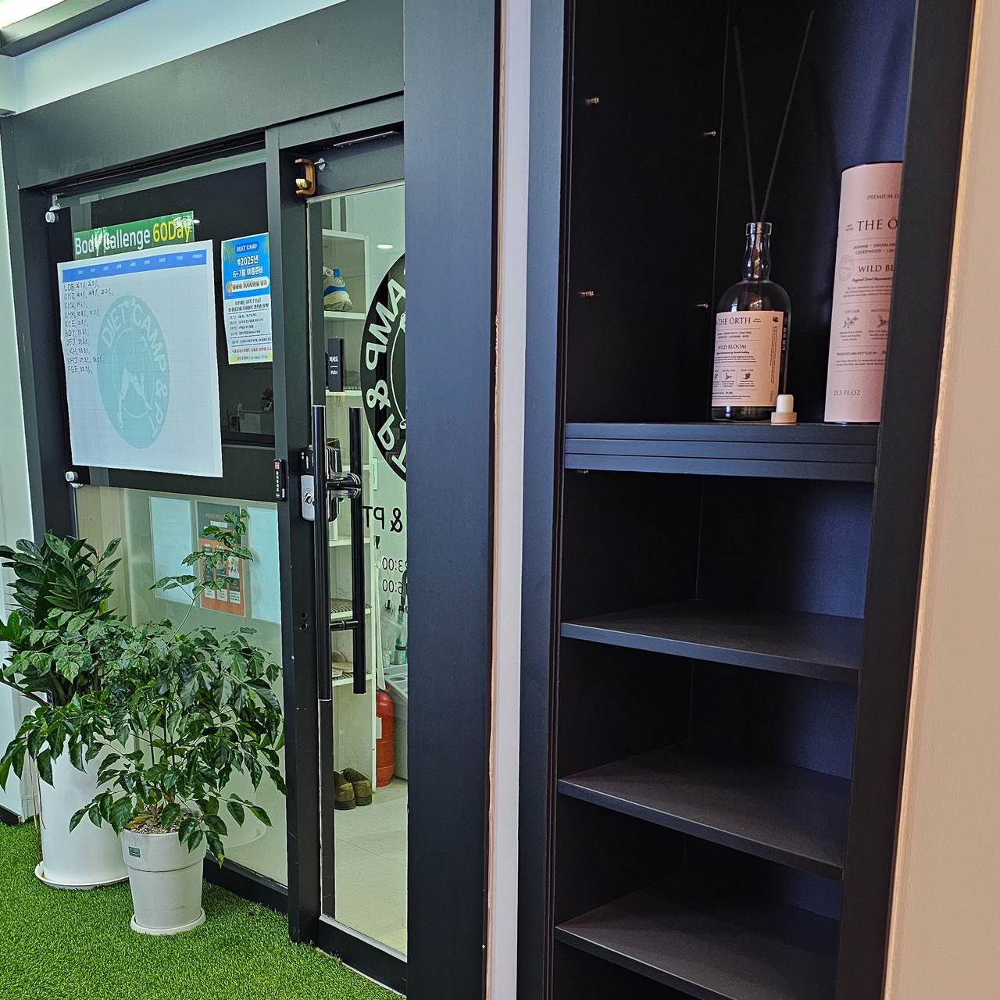
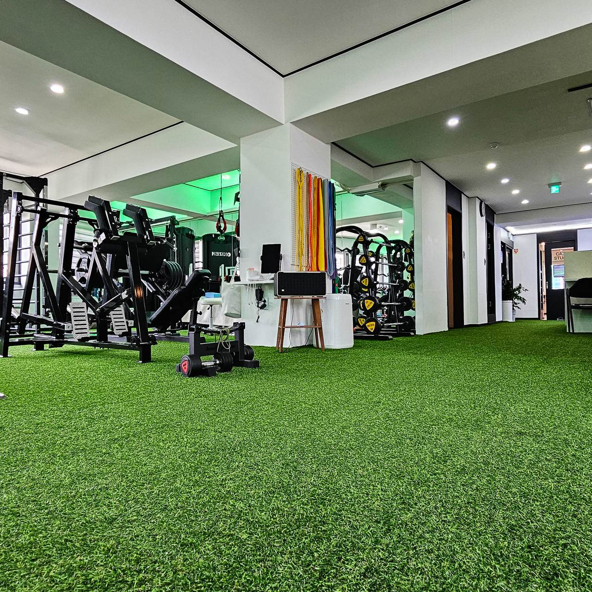
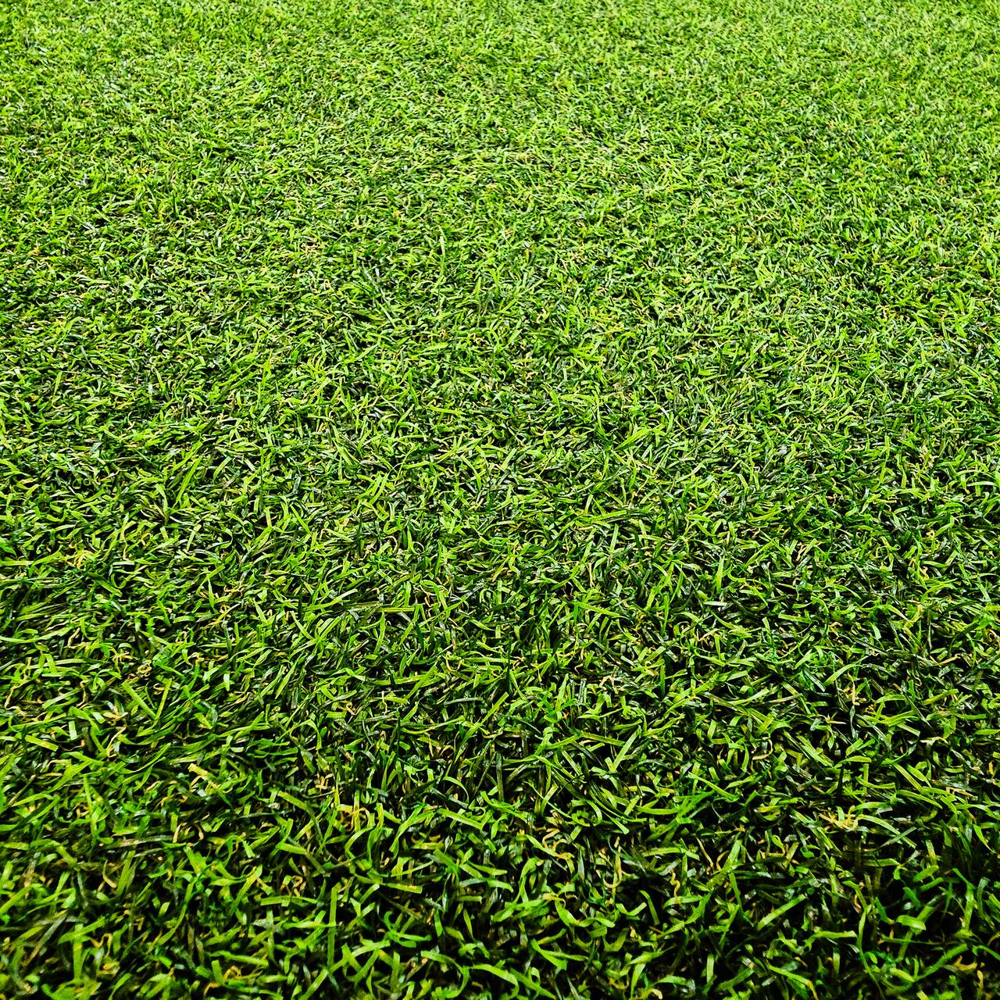
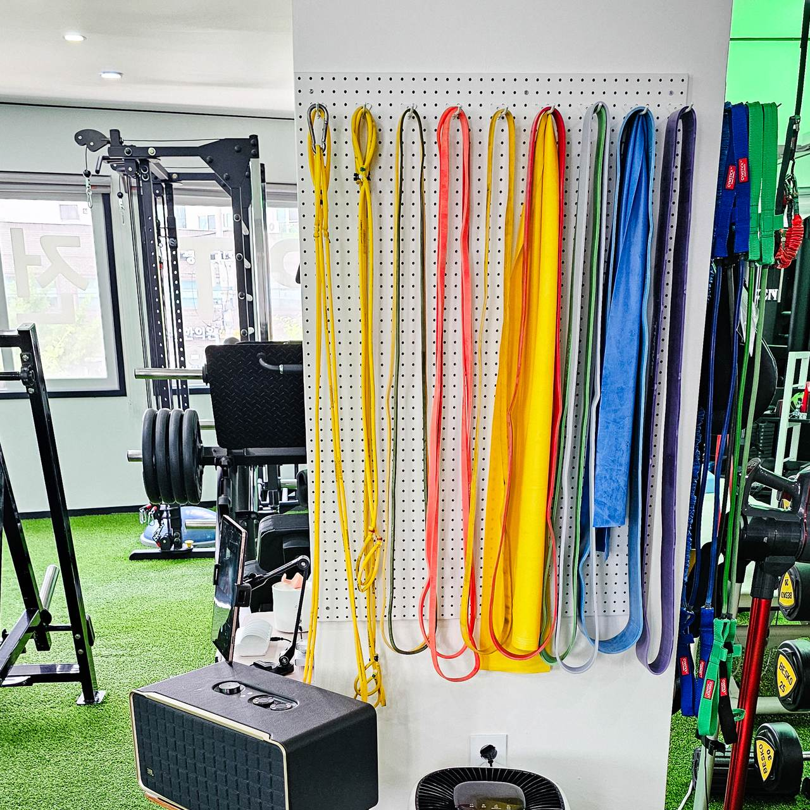
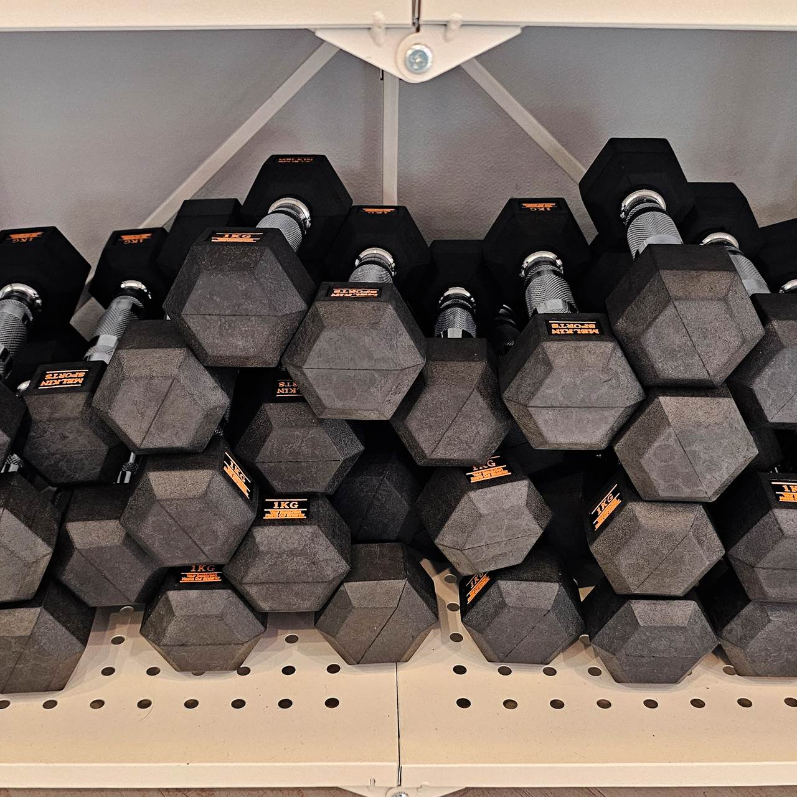
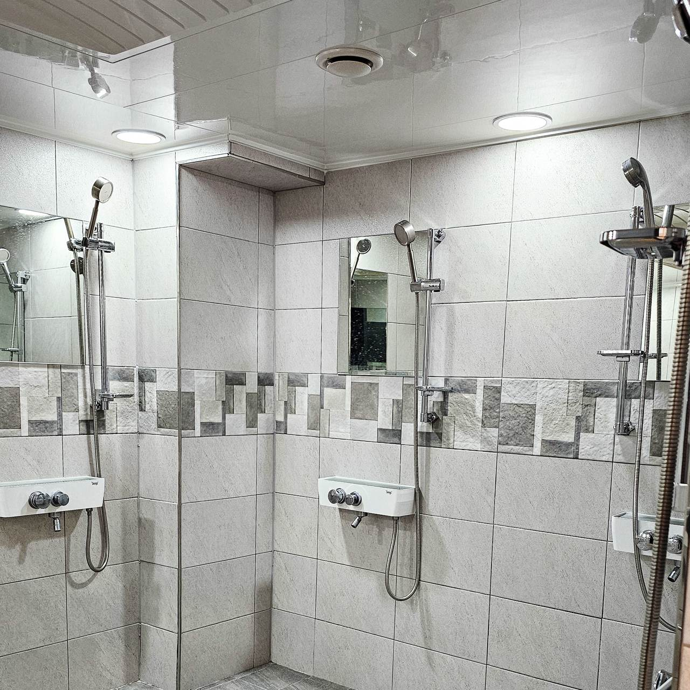
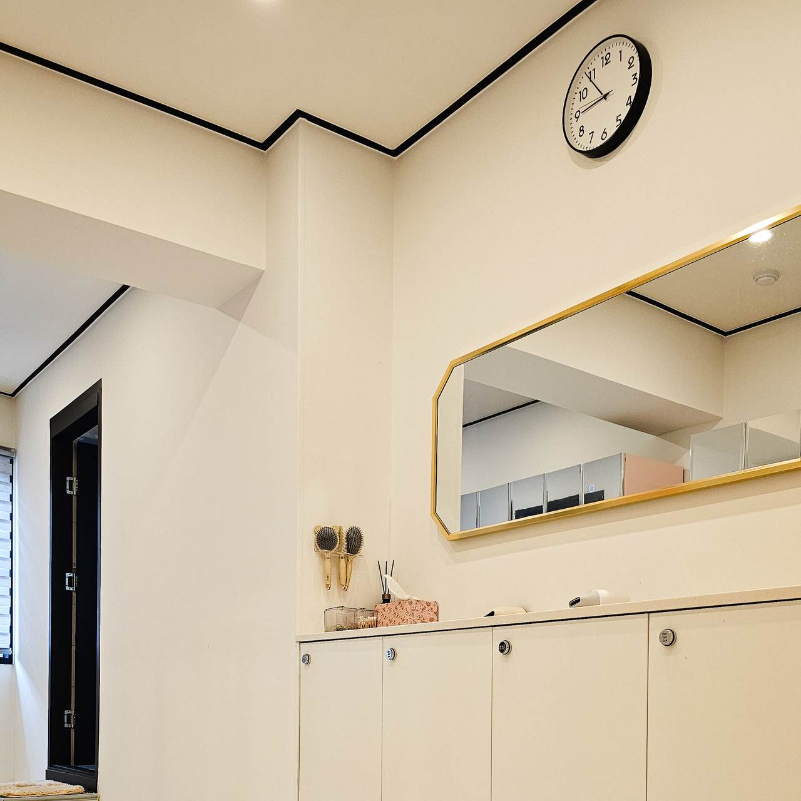

근거 = 대표님 설문 답변(2026-09-02) · 커리큘럼 가격표 · 재활운동 솔루션 자료. 자료에 없는 것은 「미수령」으로 두고 지어내지 않았다.
확정 순서 = 대표님 회신(로고·색·계정) → 웰페리온 검토 → v1.0.
| 항목 | 내용 | 근거 |
|---|---|---|
| 한 줄 (대표님 원문) | 30가지 소도구를 이용한 300가지 프로그램으로 수단방법 가리지않고 건강하고 아름다운 몸으로 만들어 드립니다 | 설문 5 |
| 한 줄 (다듬은 안) | 무거운 머신과 싸우지 마세요. 30가지 도구, 300가지 프로그램 — 오늘 내 몸에 필요한 운동만 합니다 | 가격표 1장 문구 + 설문 5 |
| 철학 | Can(내가 할 수 있는 운동) · Need(나에게 필요한 운동) · Fun(즐겁게 하는 운동) | 설문 3 |
| 북극성 (제안 · 확정 전) | 운동을 그만두지 않게 한다 — 매일 다른 프로그램으로, 한 번 들어온 회원이 끝까지 운동하게 만드는 센터. 재는 숫자 = 활성 회원 수 | 설문 2·3·4 (전략 구상안 §1) |
| 두 축 | 다이어트캠프 수업(체지방 감소·근육 증가·체력 증진) / 힐링캠프 수업(유연성·체형 교정·통증 완화·밸런스) | 설문 2 |
| 포지셔닝 | 매일 다른 프로그램으로 지루하지 않게, 관절에 무리 없이 안전하게 — "기능성 운동" 센터 | 설문 2 · 가격표 1장 |
고객 세 부류 — 메시지도 셋이다 (설문 1)
| 부류 | 누구 | 첫 문장(초안) | 왜 오나 |
|---|---|---|---|
| 그룹PT (다이어트캠프) | 30~50대 | 매일 다른 수업이라 지루할 틈이 없습니다. 혼자보다 같이. | 처음엔 프로그램 다양성, 재등록은 가족 같은 커뮤니티 (설문 2) |
| 개인PT 다이어트 | 20~30대 | 인바디 → 목표 → 기간. 처음부터 숫자로 약속합니다. | 몸매 관리 · 확실한 결과 (가격표 2장 상담 6단계) |
| 개인PT 재활 | 40~60대 | 아픈 부위만 자극하지 않습니다. 원인 근육부터, 4단계로. | 수술 후 회복 · 움직임 기능 향상 (재활 솔루션 5부위) |
| 쓰는 말 | 안 쓰는 말 | 이유 |
|---|---|---|
| 확실한 결과 · 숫자로 약속 · 매일 다른 프로그램 · 원인 근육 · 4단계 회복 · 같이 | 치료 · 완치 · 진단(의학적) · 시술 | 체육시설은 의료 행위 표현을 쓸 수 없다 — 재활 콘텐츠일수록 "운동으로 회복을 돕는다"까지만 |
| 체지방 감소 · 근육 증가 · 통증 완화 | ○kg 보장 · 100% · 부작용 없음 | 효과 보장 표현은 광고 규제 대상이자 신뢰를 깎는다 |
| 상담 예약 · 체험 1회 | 지금 아니면 · 마감 임박 (남발) | 강한 어조와 재촉은 다르다 — 확신은 결과로, 재촉은 안 한다 |
왜 지금인가: 다캠 문의는 대부분 소개로 온다(대표님 09-04). 검색으로 오는 길이 비어 있다. 그리고 사람이 검색창에 치는 시대에서 AI 에게 물어보는 시대로 넘어가고 있다 — 손님이 챗GPT·제미나이·네이버 AI 에게 "○○동 재활 운동 어디가 좋아?"라고 물을 때 다이어트캠프가 답에 나와야 한다. 브랜드가이드가 정하는 이름·한 줄·주소·자주 받는 질문이 곧 검색과 AI 가 읽는 재료다. 그래서 브랜드가이드를 시작할 때 셋을 같이 셋업한다.
| 셋 | 풀어 쓰면 | 누가 읽나 | 다캠에서 셋업할 것 |
|---|---|---|---|
| SEO (검색 최적화) | 네이버·구글 검색 결과에 나오게 | 사람이 검색창에 침 | 네이버 플레이스·구글 비즈니스 프로필 등록·정보 통일(이름·주소·시간·전화) · 블로그 글 = 손님이 치는 말로 제목(재활 5편) · 사진에 설명 텍스트 |
| GEO (생성형 AI 최적화) | 챗GPT·제미나이·네이버 AI 가 답을 만들 때 인용되게 | AI 가 웹을 읽음 | 한 줄 정의·철학·세 고객층을 어디서나 같은 문장으로 · 페이지마다 구조화 데이터(schema.org LocalBusiness · FAQ) · 출처가 분명한 글(누가·어디·언제) |
| AEO (답변 엔진 최적화) | "무릎 아픈데 운동해도 돼요?" 같은 질문에 바로 답이 뽑히게 | 음성·AI 답변·검색 즉답 상자 | 자주 받는 질문 → FAQ 페이지 1장(질문 그대로 제목 · 첫 문단에 답 2~3줄) · 블로그 제목도 질문형 |
셋업 순서 (브랜드가이드 v1.0 과 같은 날 끝낸다)
/dietcamp/ 에 둔다.재는 숫자(제안): 검색·AI 경로로 들어온 문의 건수 / 월 — 지금은 0(추정 · 대표님 회신 "대부분 소개"). 이 숫자가 소개 옆에 하나 더 서는 것이 목표.
| 항목 | 상태 | 다음 |
|---|---|---|
| 색 | 그린 #4E7432 · 블랙 #0B0B0D · 화이트 #CBCCCA (사진 추출값 · 대표님 확인 전 잠정) | 대표님께 v0.2 색값 확인 1문 대기 |
| 글꼴 | 미정 | 원칙만 먼저: 한 벌로 통일, 굵기 셋(제목·본문·보조) |
| 로고 · 간판 | 미수령 (질문 5번) | 파일 받으면 배경별(흰·검·사진 위) 사용 규칙 1장 |
| 계정 (블로그·인스타·플레이스) | 미수령 (질문 3번) | 계정마다 프로필 한 줄·링크·해시태그 고정 |







① 한 줄·철학과 어긋나지 않나 ② 세 부류 중 누구에게 하는 말인지 분명한가 ③ 의료·보장 표현이 없나 ④ 문의 한 줄이 있나 ⑤ 대표님 확인을 받았나 ⑥ 검색·AI 검색(§3)이 읽을 수 있는 형태인가(질문형 제목·즉답 문단·정확한 명칭) — 하나라도 아니오면 내보내지 않는다.
근거 = 대표님 설문 답변 · 커리큘럼 가격표(6장) · 재활운동 솔루션(10장). 금액은 싣지 않는다(가격표 별첨 · 상담 시 안내). 위치·연락처·운영시간·연혁은 미수령.
무거운 머신과 싸우지 마세요. 30가지 도구, 300가지 프로그램 — 오늘 내 몸에 필요한 운동만 합니다.
(대표님 원문: 30가지 소도구를 이용한 300가지 프로그램으로 수단방법 가리지않고 건강하고 아름다운 몸으로 만들어 드립니다)
| 수업 | 목표 | 방식 |
|---|---|---|
| 다이어트캠프 | 체지방 감소 · 근육 증가 · 체력 증진 | 매월 수업 주제를 정하고 주제에 맞는 커리큘럼 · 매일 다른 프로그램 |
| 힐링캠프 | 유연성 향상 · 체형 교정 · 통증 완화 · 밸런스 강화 | 관절에 무리 주지 않는 안전하고 섬세한 트레이닝 |
30가지 소도구 · 300가지 프로그램 — 바디펌프 · 부트캠프 · 스텝박스 · 바레 트레이닝 · 요가 · 필라테스 · 워터백 · 플로윈 · 서킷 트레이닝 · 체어 트레이닝 · 목봉 필라테스 · 줌바 · 폼롤러 · 젠링 · 필라링 · 웨이버 · 튜빙밴드 등 (설문 2).
트레이닝 목표(가격표 1장): 체력 향상 · 근력 증가 · 체지방 감소 · 근육 증가 · 자세 교정 · 라인 정렬 · 밸런스 강화 · 유연성 향상 · 통증 완화 · 셀프 마사지 · 운동 리커버리 · 다이어트 · 바디 프로필 · 재활 트레이닝 · 골프 트레이닝 · 펑셔널 트레이닝 · 애플힙 집중 트레이닝.
| 부위 | 첫 줄 | 단계 |
|---|---|---|
| 목(경추) | 거북목·일자목의 만성 뻐근함과 두통은 마사지로 끝나지 않는다 | 정밀 평가 → 보상 근육 이완·활성화 → 경추 안정화 저항 운동 → 셀프 케어·강화 |
| 어깨 | 근력 운동 전에 통증 원인 파악과 안정성 확보가 먼저 | 회전근개·주변 근육 안정화 4단계 |
| 허리 | 통증의 근본 원인 파악이 첫걸음, 무리한 움직임 배제 | 움직임 평가 → 근육 활성화 → 안정화 → 강화 |
| 무릎 | 통증 부위만 자극하면 악화된다 | 정밀 평가 → 원인 근육 이완 → 안정화 → 강화 |
| 발목 | 불안정을 방치하면 무릎·골반·허리까지 무너진다 | 균형 감각 회복 · 주변 조직 강화 4단계 |
공통: 1:1 진단 + 체험 세션(1단계 평가 → 2단계 이완을 직접 적용) → 신체 반응을 바탕으로 맞춤 계획·권장 기간을 투명하게 안내. ※ 표현은 "운동으로 회복을 돕는다"까지 — 치료·완치라 쓰지 않는다.
| 구분 | 구성 |
|---|---|
| 개인 PT | 1회 체험 · 12회(6주) · 24회(12주) · 36회(18주) · 50회(30주) — 기간 내 재등록 시 세션 추가 |
| 다이어트캠프 기간권 | 1개월 · 3개월(연기권 1) · 6개월(연기권 2) |
| 다이어트캠프 쿠폰 | 30회(120일) · 50회(180일) · 100회(365일) — 유효기간 후 자동 소진 |
| 리뷰 혜택 | 영수증 리뷰 작성 시 혜택 (상품별 상이) |
img/cover.jpg). 브랜드 색 = 그린 #4E7432 · 블랙 #0B0B0D · 화이트 #CBCCCA(사진 추출값 · 대표님 확인 전 잠정 — 상세는 브랜드가이드 §4·§5-1).목적: AI 가 다이어트캠프의 브랜딩을 돕고, 꾸준한 KPI 성장을 주도한다(웰페리온 요청 2026-09-02). 숫자는 받은 것만 — 기준선은 대표님 회신 뒤 채운다. 방향은 하나로 좁혔다.
다캠 북극성 (한 줄): 운동을 그만두지 않게 한다 — 매일 다른 프로그램으로, 한 번 들어온 회원이 끝까지 운동하게 만드는 센터.
| 왜 이 한 줄인가 | 근거 |
|---|---|
| 첫 가입은 "프로그램 다양성", 재가입은 "가족 같은 커뮤니티" — 다캠의 힘은 사람이 남는 것에 있다 | 설문 2 |
| 철학 Can·Need·Fun 세 개가 전부 "계속하게 만드는 조건"이다 (할 수 있고, 필요하고, 재밌어야 계속한다) | 설문 3 |
| "다양한 운동 경험으로 건강과 운동의 재미를 찾을 수 있는 곳" — 재미를 찾은 사람은 그만두지 않는다 | 설문 4 |
| 재활 고객(40~60대)도 목표는 통증 완화가 아니라 다시 움직이며 계속 운동하는 것 | 재활 솔루션 자료 |
북극성을 재는 숫자 하나: 활성 회원 수 (기간권·쿠폰·PT 가 유효한 회원 수, 매월 말 기준). 유입이 늘거나 이탈이 줄면 둘 다 이 숫자로 온다. 대표님 등록 대장에서 셀 수 있다 — 기준선 미수령.
| 층 | 무엇 | 숫자 | 누가 보나 |
|---|---|---|---|
| 북극성 (다캠 것) | 회원이 운동을 그만두지 않게 한다 | 활성 회원 수 (월말) | 대표님 · 회원 · 밖 |
| 앞 지표 (다캠과 합의) | 새 사람이 들어오는가 | 월 상담 예약(문의) 건수 — 기준선 5~8건/월(대표님 09-05) | 대표님 · 웰페리온 AI — 매월 Before/After 페이지 |
| 뒤 지표 (다캠과 합의) | 들어온 사람이 남는가 | 재등록률 (만료 30일 내 재등록 ÷ 만료) | 대표님 · 웰페리온 AI |
| 강점 (그대로 쓴다) | 빈틈 (여기를 채운다) |
|---|---|
| 300가지 프로그램·매일 다른 수업 — 지루하지 않다 | 소개 문장이 세 고객층에게 한 줄 — 누구에게 하는 말인지 흐리다 |
| 재활 5부위 4단계 — 전문성이 자료로 있다 | 자료가 내부 형식(pptx)이라 손님이 검색으로 만나지 못한다 |
| 재등록 = 커뮤니티 — 한 번 들어오면 남는다 | 문의는 소개로 가장 많이 온다(대표님 회신 09-04) · 한 달 5~8건(회신 09-05) — 앞 지표 기준선 확보. 소개 의존이라 검색·인스타 경로가 비어 있다 |
| 어투가 분명하다(강한 확신) | 로고·색·계정 규칙이 문서로 없다 |
| 축 | 무엇 | 산출물 | 담당 |
|---|---|---|---|
| ① 브랜드 기준 | 한 줄·세 고객 메시지·어투·쓰는 말/안 쓰는 말·색·로고·계정 규칙 + 검색·AI 검색 셋업(SEO·GEO·AEO — 브랜드가이드 §3 · 같은 날 시작) | 브랜드가이드 v1.0 (1장 + 화면) | 웰페리온 AI 초안 → 대표님 확정 |
| ② 콘텐츠 | 재활 5편(목·어깨·허리·무릎·발목) + 그룹수업 편 + 골프 시즌 편 → 블로그 4편·인스타 4건 / 월 | 초안 → 대표님 검수 → 발행 → 발행 대조표 | 웰페리온 AI 초안 · 발행은 웰페리온 파이프라인(블로그 재가동 검증 뒤) |
| ③ 문의 접수·측정 | 상담 예약 링크 1개(모든 콘텐츠의 마지막 줄) + 월 문의 건수 보고 | 접수 링크 · 월 Before/After 페이지 | 웰페리온 AI(링크 배선) · 웰페리온 AI(보고) |
경영 화면(매출·회원)은 파일럿 뒤. 지금은 세 축만.
| 주차 | 하는 것 | 끝나는 조건 |
|---|---|---|
| 1주 (9/2~9/8) | 1차 소통 회신 6개 수령 · 브랜드가이드 v1.0 · 회사소개서 v1.0 | 대표님 "맞다" 회신 |
| 2주 (9/9~9/15) | 접수 링크 1개 · 블로그 재가동 실측 1건 · 첫 달 콘텐츠 8건 초안 | 대표님 검수 통과 |
| 3~4주 | 첫 발행 8건 · 발행 대조표 · 문의 건수 첫 집계 | 발행 8건 실측 · 문의 수 1개월치 |
| 2개월 | 두 번째 달 발행 8건 · 월 Before/After 보고 1장 | 문의 건수 전월 대비 표기 |
| 3개월 | 세 번째 달 발행 · 90일 결과 1장 · 다음 90일 제안 | 3개월 추세 표 |
3. 웰페리온 가이드/cbo/dietcamp/ (공개 URL) · 기록 = 04_소통기록/소통기록.md.대표님 자료(설문·가격표·재활 솔루션)에 있는 내용만으로 적은 초안입니다. 이 페이지 오른쪽 아래 「무엇이든 물어보세요」 창이 바로 이 FAQ 로 답합니다 — 여기에 없는 질문에는 지어내지 않고 "상담 예약" 으로 안내합니다. 틀린 답, 빠진 질문을 짚어 주시면 그 자리에서 고칩니다. 금액은 넣지 않았습니다(상담 시 가격표).
| 질문 | 답 |
|---|---|
| 다이어트캠프는 어떤 곳인가요? | 안녕하세요 😊 다이어트캠프는 30가지 소도구로 300가지 프로그램을 하는 기능성 운동 센터예요. 매달 주제를 정하고 매일 다른 수업을 해서 지루할 틈이 없어요 💪 무거운 머신과 싸우듯 운동하지 않는 곳이에요! |
| 수업은 어떤 종류가 있나요? | 수업은 크게 두 가지예요 🙌 다이어트캠프 수업은 체지방 감소·근육 증가·체력 증진이 목표고, 힐링캠프 수업은 유연성·체형 교정·통증 완화·밸런스에 집중해요. 개인 PT, 재활 트레이닝, 골프 트레이닝도 따로 있어요 ⛳ |
| 그룹 수업은 어떤 프로그램으로 진행되나요? | 정말 다양해요 😆 바디펌프, 부트캠프, 스텝박스, 바레, 요가, 필라테스, 워터백, 플로윈, 서킷, 체어, 목봉 필라테스, 줌바, 폼롤러, 젠링, 필라링, 웨이버, 튜빙밴드… 30가지 소도구를 써서 같은 수업이 반복되지 않아요 ✨ |
| 운동을 처음 하는데 그룹 수업을 따라갈 수 있을까요? | 물론이에요 😊 그룹 수업(다이어트캠프)은 30~50대 분들이 주로 오시고, 혼자 운동하기 힘드셨던 분들이 프로그램이 다양해서 시작하세요. 같이 운동하다 보면 회원분들끼리 가족 같은 분위기가 돼서 오래 다니시는 분이 많아요 🤗 |
| 개인 PT는 어떻게 진행되나요? | 개인 PT 는 여섯 단계로 차근차근 진행해요 📝 ① 상담 시간 예약 → ② 인바디로 목적·계획 상담 → ③ 간단한 운동 능력 테스트 → ④ 필요한 방향 안내 → ⑤ 운동 계획과 기간 제시 → ⑥ 중간 점검하며 식단까지 다시 잡아요. 처음부터 숫자로 약속하고 중간에 다시 맞춰드려요 💪 |
| 재활 운동도 하나요? 어떤 부위를 다루나요? | 네, 하고 있어요 🙆 목·어깨·허리·무릎·발목 다섯 부위 재활 트레이닝이 있어요. 아픈 곳만 자극하지 않고 ① 움직임 정밀 평가 → ② 원인 근육 이완 → ③ 안정화 운동 → ④ 기능 회복·근력 순서로 운동으로 회복을 도와드려요. 1:1 평가와 체험 세션으로 시작해요 😊 |
| 무릎이나 허리가 아픈데 운동해도 될까요? | 걱정 많으셨죠 😢 아픈 부위만 무작정 자극하면 오히려 안 좋을 수 있어서, 먼저 1:1 움직임 평가로 원인 근육을 찾아요. 그다음 무리한 동작은 빼고 주변 근육부터 안전하게 회복하는 순서로 가요. 체험 때 몸 반응을 보고 맞춤 계획과 기간을 투명하게 말씀드릴게요 🙏 |
| 골프 트레이닝은 무엇을 하나요? | 골프 치시는 분들 정말 많이 오세요 ⛳ 세 가지예요. 비거리를 위한 근력 트레이닝(하체·코어·상체 골프 근육), 밸런스·유연성 트레이닝(불균형 정렬·부상 방지), 그리고 필드 나가기 하루 전 컨디셔닝! 최상의 컨디션으로 라운딩 나가시게 도와드려요 😊 |
| 처음 가면 무엇을 하나요? 체험이 있나요? | 처음이시면 상담 시간을 먼저 예약해 주세요 📅 오시면 인바디 측정하고 간단한 운동 능력 테스트를 한 뒤에 어떤 운동이 필요한지 안내드려요. PT 1회 체험이 있어서 부담 없이 해보실 수 있어요 😊 |
| 가격은 얼마인가요? | 가격은 상담 때 가격표로 직접 안내드리고 있어요 😊 그룹 수업은 기간권과 횟수 쿠폰 두 가지 방식이 있고, 개인 PT 는 횟수별로 있어요. 상담 예약 남겨주시면 목적에 맞는 구성을 같이 정해드릴게요 🙌 |
| 기간권을 쓰다가 잠시 쉬어야 하면 어떻게 하나요? | 네, 쉬어야 할 때 방법이 있어요 🙆 3개월권은 일주일 연기권 1개, 6개월권은 일주일 연기권 2개가 있어요. 횟수 쿠폰은 정해진 유효기간 안에 쓰시면 되고, 기간이 지나면 자동으로 소진돼요. 미리 말씀 주시면 챙겨드릴게요 😊 |
| 다이어트캠프의 운영 철학은 무엇인가요? | 저희가 제일 중요하게 생각하는 세 가지예요 ✨ Can — 내가 할 수 있는 운동, Need — 나에게 필요한 운동, Fun — 즐겁게 하는 운동! 다양한 운동을 경험하면서 즐겁고 안전하게 운동하는 센터를 만들고 있어요 💪 |
| 주차 되나요? | 주차는 어려워요 🙏 센터에 주차 공간이 없고 근처에도 마땅한 곳이 없어서, 대중교통으로 오시는 걸 추천드려요. 오시는 길은 상담 예약 때 자세히 안내드릴게요 😊 |
| 운영 시간이 어떻게 되나요? | 주중은 아침 9시부터 밤 11시까지, 토요일은 9시부터 4시까지 열어요 💪 일요일과 공휴일은 쉬는 날이에요. 개인 강습 회원분은 휴무일이어도 예약만 잡히면 진행되니 편하게 말씀 주세요 😊 |
| 어디에 있나요? 찾아가는 길이요 | 은평로 23, DC백화점 건물 3층이에요 — 1층에 본죽이 있는 건물이라 찾기 쉬워요 😊 약도는 여기요 👉 https://munjanara.co.kr/umap.htm?um=19226&zm=17 오시다 헷갈리시면 02-6941-0701 로 전화 주셔도 돼요! |